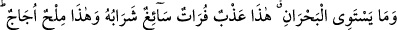
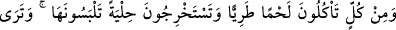
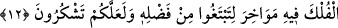

nefesini tutarak zikretme yolunu tercih etmelerinin hikmeti de senin için inkişaf etmiş ve
yine sadaka ve akraba ziyaretinin ömrün artmasına nasıl sebep olduğu da ortaya çıkmış
olur.
Denilir ki ömrün eksilmesinden maksad, ömrün yaşanıp geçen ve kalan kısımlarıdır.
Zira kişinin defterine ömrü şu kadar senedir, diye yazılır. Sonra altına bir gün gitti, iki
gün gitti, diye düşülür. Böylece ömrünün sonuna kadar işlem devam edip gider. İbn
Abbas (r.a.) der ki: “Allah Teâlâ her nesneye varıp son bulacağı bir ömür tayin etmiştir.
O nesne üzerinden gece gündüz geçtikçe zorunlu olarak ömrü azalır. Ömrün azalmasının
Allah Teâlâ’nın rızâ ve hoşnutluğundan başka yerlere sarf edilmesi olduğu da
söylenmiştir.
Hâfız der ki:
Dost için hayatımızı ve malımızı fedâ etmedik, yazık.
Aşk işinde elimizden bundan başkası gelmiyor.
Yine Hâfız der ki:
Dostla geçen zamanlar hoştur.
Geriye kalan vakitler boş ve hatırlanmaya değmez.
Molla Câmi der ki:
Kıymetli ömrün her demi eşsiz bir hazînedir.
Böyle bir hazîne her an boşa gidiyor, âh, âh.
Şeyh Sâdi der ki:
Her an ömürden bir nefes eksiliyor.
Baktığın zaman fazla bir şey kalmıyor.
Ömür kara benzer, temmuz güneşinde
Eridi az kaldı, koşma peşinde.
Allah bizi de sizi de gaflet uykusundan uyandırsın!